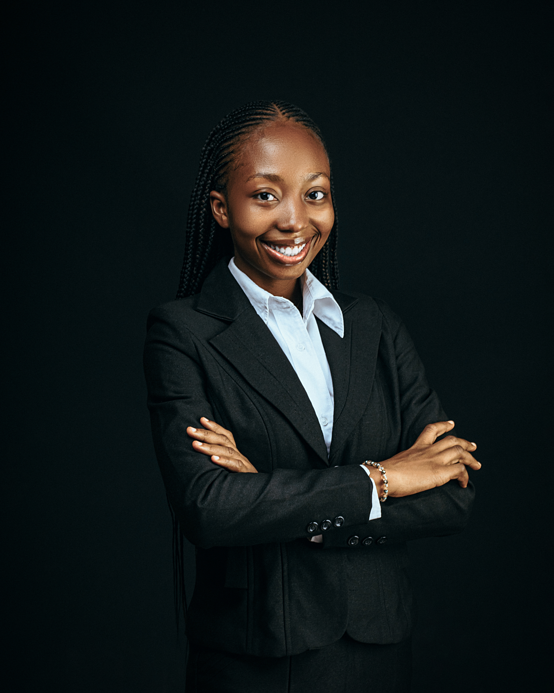

Melody Arinze

Summary
A graduate law student with excellent judgement and good inter-personal skills looking for a professional environment to hone her skills and leverage her abilities for the overall good of any organization she finds herself in.
Education
University of Nigeria, Nsukka Bachelor of Laws (LLB) (2018-2024)
- Current Academic Standing - Second Class Upper. (4.20/5.00)
Work Experience
- Faculty Of Law, Enugu State University of Science and Technology. Department of Public Law.
Research Assistant to Mrs. Eberechi Amaefule (Esq) (August 2022 - 2023)
- Gathered and analyzed research data such as statutes, case law, legal articles as well as other legal documents.
- Kept and monitored legal documents and volumes to ensure that the law library is up to date with recent happenings in the legal world.
- Researched and identified standards and best practices for long term preservation of digital records at the Faculty Law Library.
- Assisted in performing literature reviews, conducted research and summarized findings on some project topics.
Skills
- Communication Skills: Oral and Written Fluency in English and Igbo Language
- Microsoft Office: Proficient in Word, Excel and PowerPoint
- Google workspace: Docs, Sheets, Slides, Drive, Gmail and Calendar
- AI Tools: ChatGPT, Bing, Google Bard, Canva, RunwayML, Julius AI, Uizard and Grammarly
- Frontend Development: HTML, CSS and JavaScript
Volunteering and Community Service
Rotaract Club, University of Nigeria (2021-2022)
- Undertook the role of the welfare director of the club and seeing to the wellbeing of all members of the club.
- Organized and Participated in a campus wide clean-up as an effort to practice environmental sustainability.
Assemblies of God Church, Enugu State (2022-Present)
- Undertook the role of the Financial Secretary of the Teens and Youth department of the church.
Others